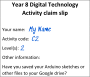

Activity C2 — Blink (the delay function)
 Level 2 — Change the blink “off” time
Level 2 — Change the blink “off” time
Complete the challenge
void setup() {
pinMode(12, OUTPUT); // set up pin 12 as an output.
}
void loop() {
digitalWrite(12, HIGH); // turn the LED on
delay(1000); // wait for 1 second
digitalWrite(12, LOW); // turn the LED off
delay(1000); // wait for 1 second
}
Can you see a comment in the sketch that says “wait for a second”? (comments start with //. Everything after // is for people to read, not the computer).
The command delay(1000); tells the Arduino to wait for 1000 milliseconds. 1000 milliseconds is 1 second.
Change the second delay(1000); to delay(2000);.
Claim your achievement
